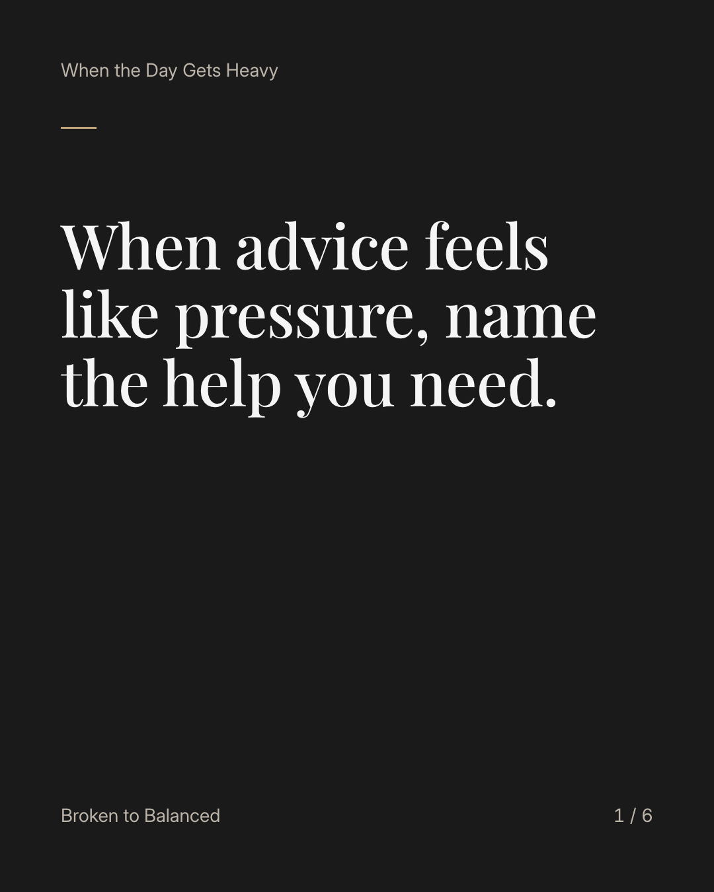
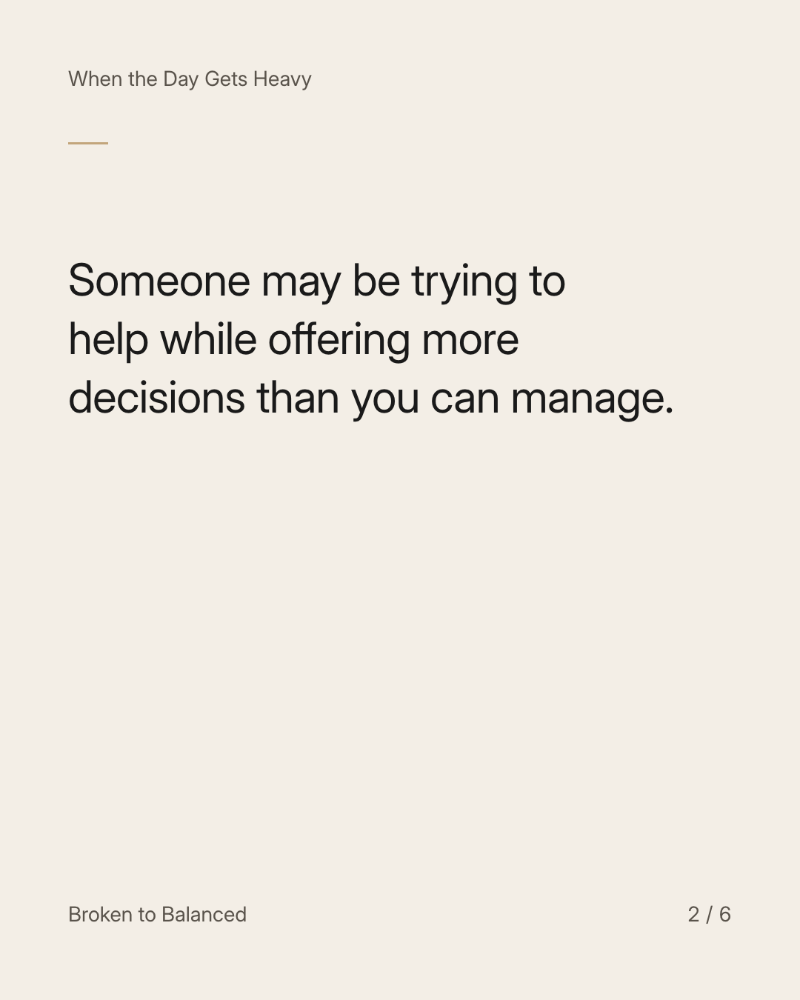
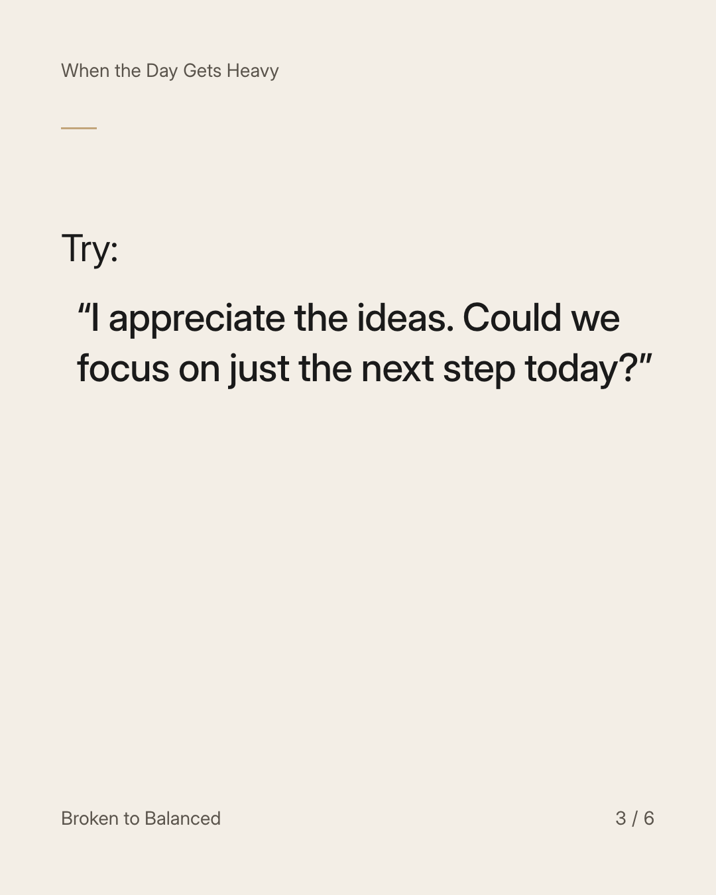
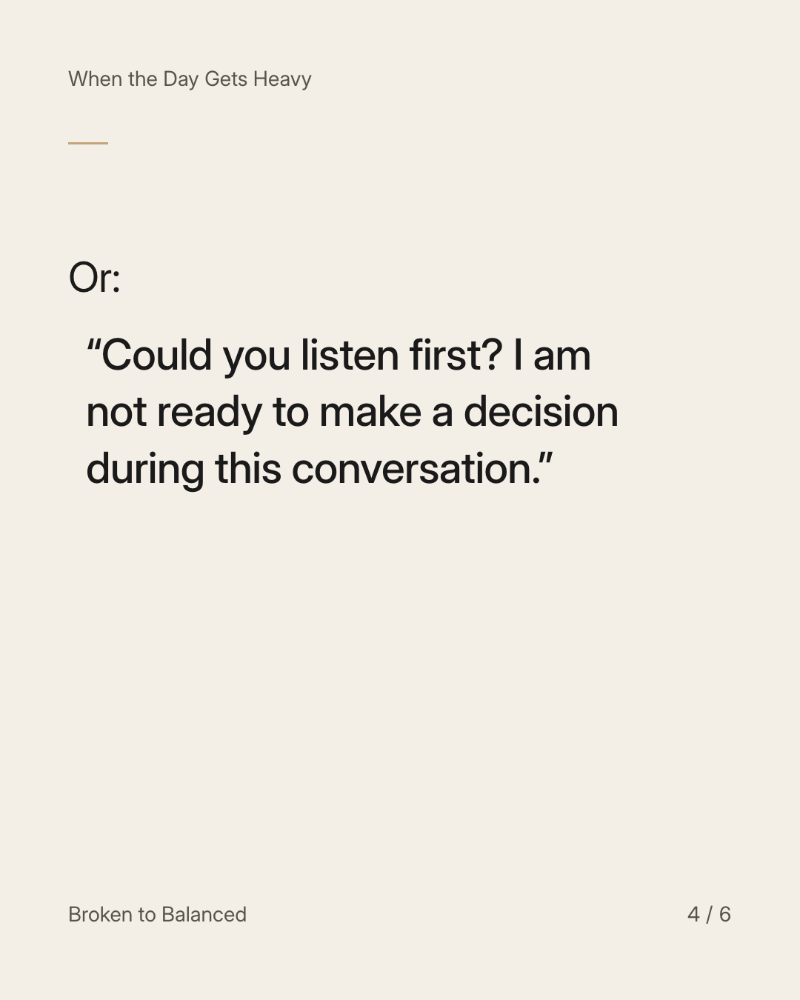
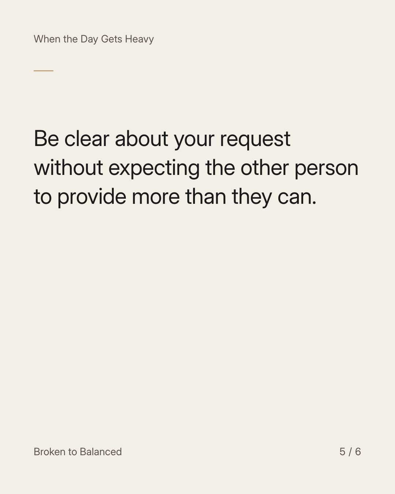
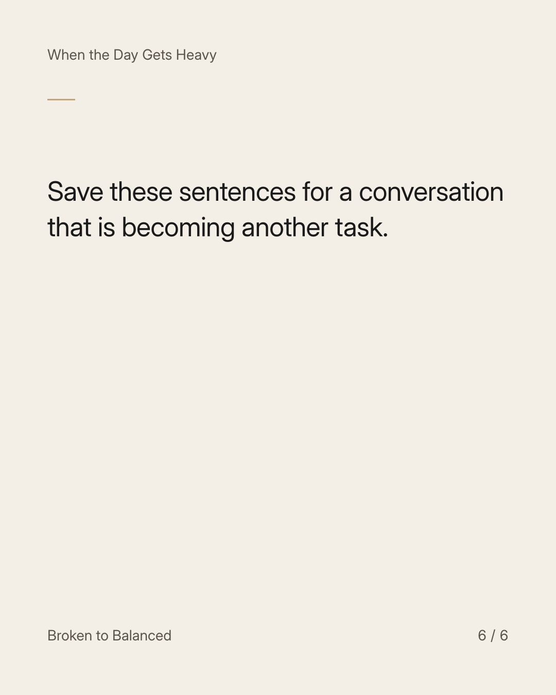

Exact text and accessibility text
When advice feels like pressure, name the help you need.
Slide 1 of 6. When advice feels like pressure, name the help you need.


Exact text and accessibility text
Someone may be trying to help while offering more decisions than you can manage.
Slide 2 of 6. Someone may be trying to help while offering more decisions than you can manage.


Exact text and accessibility text
Try: “I appreciate the ideas. Could we focus on just the next step today?”
Slide 3 of 6. Try: “I appreciate the ideas. Could we focus on just the next step today?”


Exact text and accessibility text
Or: “Could you listen first? I am not ready to make a decision during this conversation.”
Slide 4 of 6. Or: “Could you listen first? I am not ready to make a decision during this conversation.”


Exact text and accessibility text
Be clear about your request without expecting the other person to provide more than they can.
Slide 5 of 6. Be clear about your request without expecting the other person to provide more than they can.


Exact text and accessibility text
Save these sentences for a conversation that is becoming another task.
Slide 6 of 6. Save these sentences for a conversation that is becoming another task.
Exact caption
Plain-text fallback: select and copy the caption.